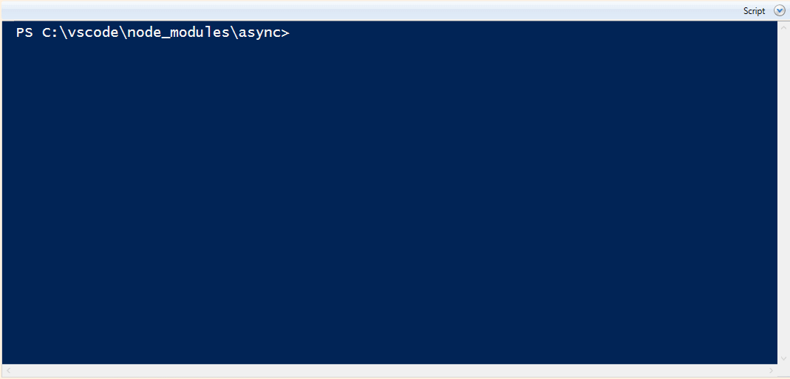

NPM tab completion with powershell
Want intellisense for npm from within powershell? Doug Finke has it covered.
In powershell version 5 from an elevated prompt:
Find-Module TabExpansionPlusPlus -repository PsGallery | Install-Module -Scope AllUsers
Find-Module NPMTabCompletion -repository PsGallery | Install-Module -Scope AllUsers
From a freshly opened prompt (that does not need to be elevated)
Import-Module TabExpansionPlusPlus
Import-Module NPMTabCompletion
You will also need to either add those commands to your profile, or run them in every powershell session where you want npm tab completion to work.
This not only gives you intellisense-style completion for npm commands, it also looks in a local package.json file to see if there are any commands you've specified locally.

Trouble-shooting....
- Did you get this error from Install-Module ?
Install-Module : A parameter cannot be found that matches parameter name 'Name'.
It may be that you have the wrong Install-Module!
- Did you get this error from Find-Module ?
NuGet provider is required to continue
You need to install the NuGet Package Provider.
Install-PackageProvider -Name NuGet -MinimumVersion 2.8.5.201 -Force
External Sources
- Doug blog post on it: 3 Ways to Speed up Visual Studio Code Extension Development
- Github dfinke/NPMTabCompletion
- npm is not just for node... npm is for EVERYTHING
See also
- More about package/module commands